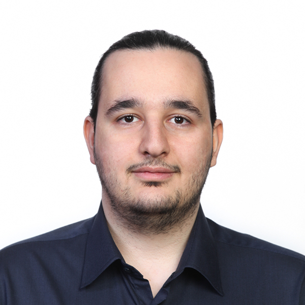

MohammadHossein
(Meysam) Ahmadi
PhD Student in Geotechnical Engineering
Virginia Tech
I am a PhD student in Geotechnical Engineering in the Department of Civil and Environmental Engineering at Virginia Tech. My research focuses on combining geotechnical engineering, geophysics, sensing technologies, and data-driven methods to improve subsurface characterization.
My current work includes multi-physics sensing and artificial intelligence for real-time look-ahead while drilling, as well as applications of seismic and electrical geophysical methods to geotechnical problems.
Following my graduate studies, I hope to continue working at the intersection of research and engineering, developing technologies that improve our ability to characterize the subsurface and make underground construction safer and more reliable.
